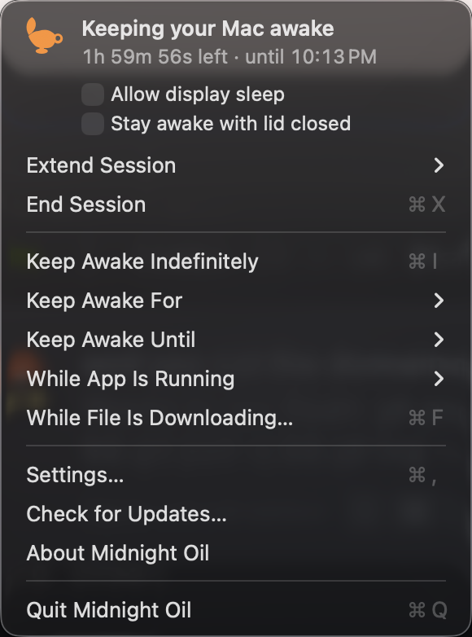
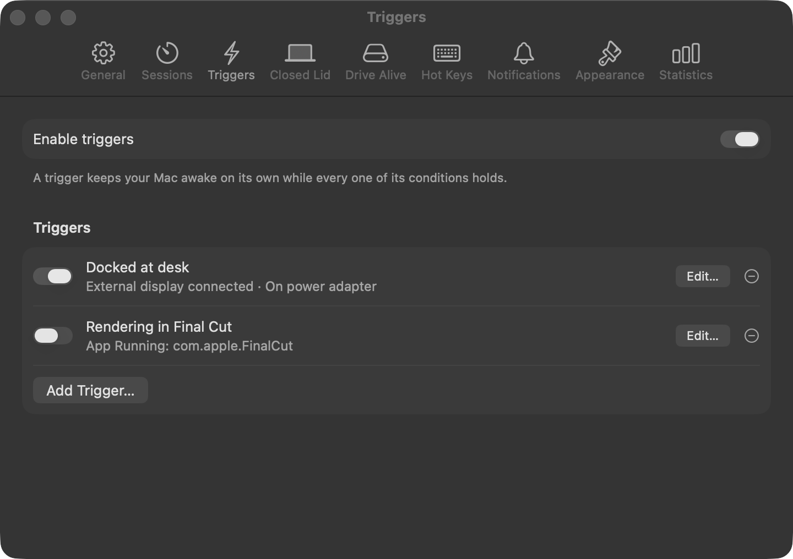
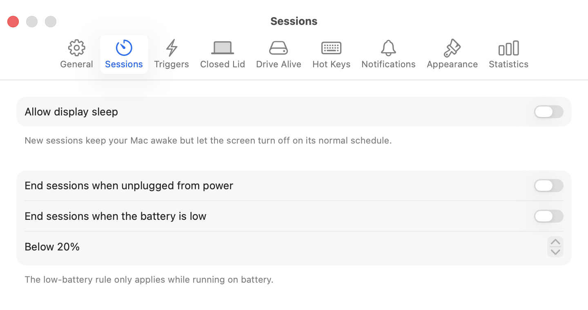
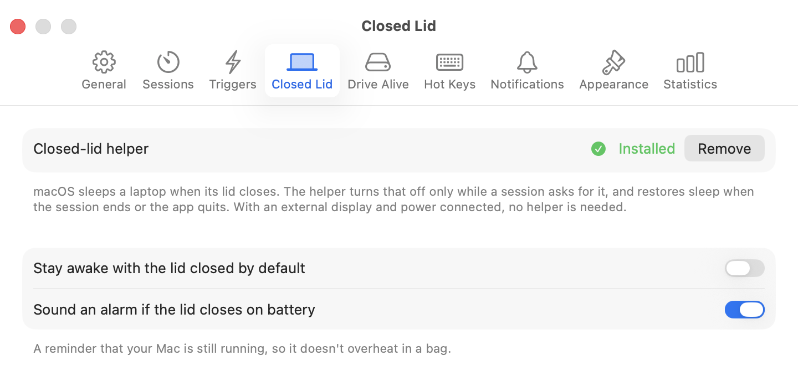
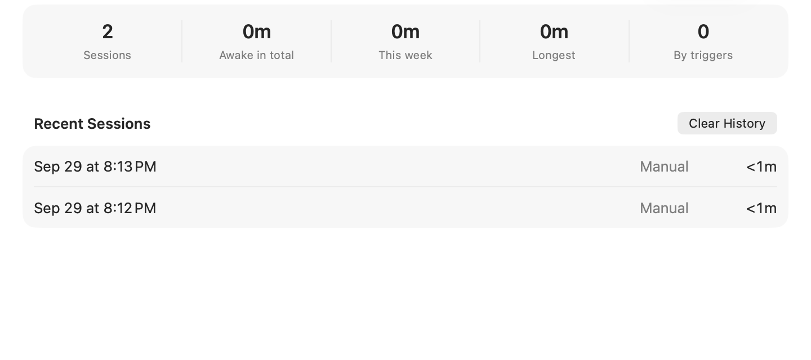

Let your AI agents
work while you sleep.
Midnight Oil keeps your Mac awake so Claude Code, Codex, and Cursor can finish the job. Overnight, while you run an errand, even with the lid closed in your bag. Free and open source.
Free · Open source · macOS 14 or later · brew install --cask coreyhaines31/tap/midnightoil

11:04 PM. You went to bed.
The migration didn't.
Midnight Oil holds the Mac awake through the night while the agent works, then hands it back at seven.
23:04 › Migrate the billing service off the legacy API. Run the full suite after each step. 23:05 Reading 41 files in services/billing… 23:09 Plan: 6 steps, each gated on the suite. Starting with the Invoice client. 23:31 Step 1/6 — replaced Invoice client ✓ 212 tests passing 23:52 Fixed 3 flaky assertions in invoice_spec ✓ 00:14 Step 2/6 — rewrote webhook handlers ✓ 212 tests passing 01:02 Step 3/6 — customer sync (retry after rate limit) ✓ 01:49 Step 4/6 — removed legacy adapter ✓ 198 tests passing, 14 skipped 02:37 Step 5/6 — updated fixtures and docs ✓ 212 tests passing 02:58 Removed 1,180 lines, added 640. No behavior changes outside billing. 03:11 Step 6/6 — opening pull request… 03:12 Running the full suite one more time
The flame in the menu bar is the whole product. Nothing slept, nothing dropped, nothing to redo in the morning.
Your Mac sleeps.
Your agents stop.
macOS puts a Mac to sleep after a few idle minutes, and an agent that's mid-task doesn't count as activity. The terminal freezes, the SSH session drops, and you come back to half a job. Midnight Oil fixes that, whichever way you work.
Always on at your desk
Triggers keep your Mac awake on their own while conditions hold: docked to a display, on power, on your office Wi-Fi, while Terminal or Cursor is open, or on a schedule. Set them once and stop thinking about it.

Lid closed, still working
Shut the laptop, put it in your bag, get on the train. The agent keeps going. Normal sleep comes back the moment the session ends.
Overnight, or until it's done
Keep awake until 7 AM, for 8 hours, or for as long as Terminal is running. Extend a session without restarting it. When the app quits, your Mac goes back to normal.

Won't cook your laptop
End sessions when you unplug or when the battery drops below a level you choose. An alarm sounds if the lid closes on battery, so you always know it's still running.

Know what it did
How many hours your Mac worked while you were away, this week and all time, and what started each session.

Built for the way work happens now.
Agents run for hours and don't need you at the keyboard. Your Mac doesn't know that. Midnight Oil does.
Start the run at 11. Wake up to a finished PR.
Set “Keep awake until 7 AM” before bed. The refactor, the migration, the 400 test fixes: done while you sleep, and your Mac goes back to normal at seven.
Step out for forty minutes. It keeps going.
Lunch, the school run, a workout. Tie the session to Terminal or Cursor and walk away. When the agent's app quits, the session ends on its own.
Lid closed, in the bag, still working.
Check “Stay awake with lid closed,” shut the laptop, and get on the train. The agent doesn't notice. If you're on battery, an alarm tells you it's still running.
Three clicks, then walk away.
Start the agent
Kick off the long task in Claude Code, Codex, Cursor, or whatever you use.
Click the flame
Pick how long: until morning, for 8 hours, or while Terminal is running. Check “Stay awake with lid closed” if you're heading out.
Leave
Sleep, run the errand, catch the train. Your Mac goes back to its normal sleep schedule the moment the session ends.
The other ways to do this, honestly compared.
You can keep a Mac awake for free without any app. Here's what you give up.
| Midnight Oil | System Settings | caffeinate | Amphetamine | |
|---|---|---|---|---|
| One click to start, one to stop | Yes | Buried in Battery › Options | Type a command, remember to kill it | Yes |
| Timed and “until” sessions | Yes | No | Yes-t seconds, do the math | Yes |
| Ends when the agent's app quits | Yes | No | Only for one process | Yes |
| Keeps working with the lid closed | Yesrestores sleep automatically | Only on a display and power | No | Yesneeds a separate script download |
| Triggers (Wi-Fi, display, app, schedule…) | Yes | No | No | Yes |
| Battery safety and lid alarm | Yes | No | No | Yes |
| Still maintained | Yes | Yes | Yes | Last update 2023 |
| Open source | Yes, MIT | No | No | No |
| Price | Free | Free | Free | Free |
Safe by design.
Keeping a laptop awake with the lid shut is the one thing macOS won't let a normal app do. Here's how Midnight Oil does it without ever leaving your Mac stuck awake.
A helper you approve once
macOS asks you to allow it in System Settings. It runs Apple's own pmset command and accepts instructions only from the signed Midnight Oil app.
Sleep always comes back
When the session ends, when the app quits, and even if the app crashes. The helper notices the dropped connection within a second and restores normal sleep.
Even if the helper dies
macOS restarts it, and the first thing it does on launch is restore sleep. Nothing is ever left disabled behind your back.
Built in the open.
No account, no subscription, no telemetry. Everything it does is in the source.
Why it exists. I run coding agents all day and let them keep going overnight. My Mac kept falling asleep on them, and Amphetamine, the app everyone used for this, hasn't been updated since 2023. So I built the replacement I wanted, and made it free. — Corey Haines
Questions
Which AI agents does it work with?
All of them. Midnight Oil keeps the Mac itself awake, so it doesn't matter what's running: Claude Code, Codex, Cursor, a cron job, a render, or a download. Tie a session to the app that runs your agent and it ends when that app quits.
Is it really free?
Yes. It's MIT-licensed and the whole thing is on GitHub. No account, no subscription, no telemetry.
Won't it drain my battery?
Only if you let it. Set sessions to end when you unplug or when the battery drops below, say, 20%, and they will. Plugged in, there's nothing to worry about.
Which Macs does it run on?
Apple Silicon and Intel Macs running macOS 14 Sonoma or later.
How is this different from Amphetamine?
Same idea, and everything Amphetamine could do is here. Amphetamine stopped being updated in 2023; Midnight Oil is maintained, open source, and you can drag its icon around the menu bar.
Does it update itself?
Yes. The app is signed and notarized by Apple, and checks for updates on its own. You can turn that off in General settings.
Does it keep the screen on too?
Only if you want it to. “Allow display sleep” keeps the Mac awake but lets the screen turn off, which is usually what you want for an overnight run.
What if I close the lid and forget it's running?
On battery, an alarm sounds when the lid closes during a closed-lid session, and you can set sessions to end below a battery level. On power, it just keeps working.
Does it need admin rights?
Only closed-lid mode does, and only once: you approve its helper in System Settings › Login Items. Everything else runs as a normal app.
Where do I report a bug or ask for a feature?
GitHub Issues. Pull requests are welcome too.